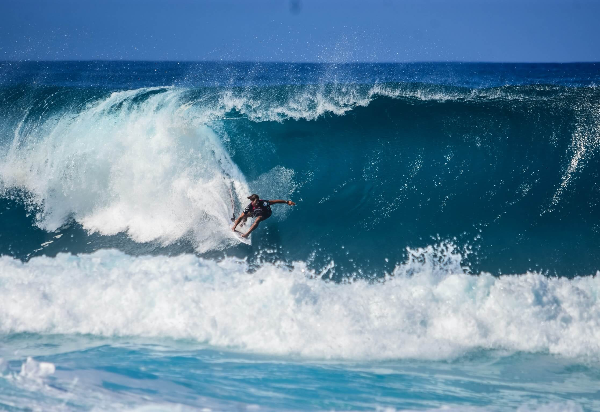

Into the Belly of the Beast
There are very few sights in this world that require a tremendous amount of skill and courage to see. One of those sights is the view of getting tubed.
continue reading

July 23, 2019 | 3 comments